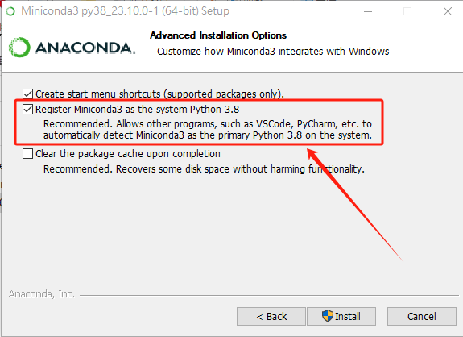

安装（python）注：更推荐直接安装使用anaconda
请到官网下载Python安装包：https://www.python.org/downloads/windows/
下载完毕后，右键->以管理员身份运行->是。

如果你不想手动配置环境变量，请勾选上图中的“添加python.exe到环境变量”。
其他步骤没啥技术含量。
安装（anaconda）
完整conda：
建议使用清华镜像站：https://mirrors.tuna.tsinghua.edu.cn/anaconda/archive/
请下载最新安装包！
miniconda：
建议使用清华镜像站：https://mirrors.tuna.tsinghua.edu.cn/anaconda/miniconda/
请下载最新安装包！
对于Windows用户：
安装时直接右键->以管理员身份运行->是。

如果你不想手动配置环境变量，请勾选上图中的“添加python.exe到环境变量”。
其他步骤没啥技术含量。
如果安装完毕使用出现错误，请参照下文“conda在windows Terminal中提示报错无法加载文件C:\XXX\WindowsPowerShell\profile.ps1”。笔者曾在2023年版本的anaconda遇到过这个问题。
使用pip报错“pip 不是内部或外部命令，也不是可运行的程序”
出现在“Miniconda3-py312_24.5.0-0-Windows-x86_64”版本。
请在系统环境变量中添加“%CONDA_HOME%\Scripts”。
pip下载库包报错：Defaulting to user installation because normal site-packages is not writeable
1、在使用pip下载库包的时候报错：Defaulting to user installation because normal site-packages is not writeable
2、错误解决方式：
查看了下anaconda的安装路径，查看目录属性，发现是只读属性，因此需要修改权限，或者使用管理员权限打开命令行，具体操作步骤：
1）修改目录权限属性
2）找到site.py文件：在命令行下输入：python -m site -help
site.py默认是在C:\ProgramData\miniconda3\Lib\site.py
然后打开site.py文件，把其中的：
USER_SITE = None USER_BASE = None
路径修改为自己的anaconda的安装路径即可：
USER_SITE = "C:\ProgramData\miniconda3\Lib\site-packages" USER_BASE = "C:\ProgramData\miniconda3\Scripts"
requests 使用代理报错 Cannot connect to proxy.‘,FileNotFoundError(2, ‘No such file or directory问题解决
如题，使用代理报错,降级urllib3 不要使用1.26.0版本，安装低版本。
pip install urllib3==1.25.11
Ubuntu上Anaconda手动配置
接下来我们开始手动配置环境，在终端中键入sudo gedit ~/.bashrc，输入密码后就进入了.bashrc文件里，到文件最下方加入：
export PATH="/home/zy190/anaconda3/bin:$PATH"
然后Ctrl+S保存文件，这样就配置好了。为了验证，键入source ~/.bashrc激活环境，再执行
conda list，就有了安装的具体内容。
最后检查一下安装是否真的成功，键入conda --version，如果下方出现了conda的版本号，说明配置成功
requests 代理设置
ximport urllib3urllib3.disable_warnings()
proxies={'http': 'http://127.0.0.1:7890','https': 'https://127.0.0.1:7890'}
result0=requests.get(url=url,proxies=proxies,verify=False)
conda在windows Terminal中提示报错无法加载文件C:\XXX\WindowsPowerShell\profile.ps1
提示 “无法加载文件C:\XXX\WindowsPowerShell\profile.ps1，因为在此系统上禁止运行脚本” 的错误。
以管理员身份运行
PowerShell；执行：
get-ExecutionPolicy，回复Restricted，表示状态是禁止的；执行：
set-ExecutionPolicy RemoteSigned，选择A即可。xxxxxxxxxxPS C:\WINDOWS\system32> get-ExecutionPolicyRestrictedPS C:\WINDOWS\system32> set-ExecutionPolicy RemoteSigned执行策略更改执行策略可帮助你防止执行不信任的脚本。更改执行策略可能会产生安全风险，如 https:/go.microsoft.com/fwlink/?LinkID=135170中的 about_Execution_Policies 帮助主题所述。是否要更改执行策略?[Y] 是(Y) [A] 全是(A) [N] 否(N) [L] 全否(L) [S] 暂停(S) [?] 帮助 (默认值为“N”): APS C:\WINDOWS\system32>
解决Anaconda创建环境时报错：PackagesNotFoundError
https://blog.csdn.net/birbcoding/article/details/140438063
报错内容
创建环境时出现以下报错：
xxxxxxxxxxChannels: - defaults - conda-forgePlatform: linux-64Collecting package metadata (repodata.json): doneSolving environment: failed
PackagesNotFoundError: The following packages are not available from current channels:
- python-3.8
Current channels:
- defaults - https://conda.anaconda.org/conda-forge
To search for alternate channels that may provide the conda package you'relooking for, navigate to
https://anaconda.org
and use the search bar at the top of the page.12345678910111213141516171819202122解决方法
为当前用户重新配置conda-forge渠道
xxxxxxxxxxconda config --add channels conda-forgeconda config --set channel_priority strict12重新创建环境，如：
xxxxxxxxxxconda create -n open-mmlab python=3.8 -y1conda config --add channels conda-forge 和 conda config --set channel_priority strict 这两个命令能够解决问题的原理主要涉及到conda渠道配置和优先级管理。
原理解析
添加
conda-forge渠道：xxxxxxxxxxconda config --add channels conda-forge1这条命令将
conda-forge渠道添加到conda的配置文件中。conda-forge是一个社区驱动的渠道，提供了大量的软件包，尤其是在defaults渠道中找不到的软件包。通过添加这个渠道，可以扩大可用软件包的范围。设置渠道优先级：
xxxxxxxxxxconda config --set channel_priority strict1这条命令设置
conda使用严格的渠道优先级。具体来说，这意味着conda将严格按照配置文件中渠道的顺序来搜索和安装软件包。优先级高的渠道中的包会优先被选择，而低优先级的渠道中的包只有在高优先级渠道中找不到时才会被考虑。
为什么这些设置能够解决问题
渠道覆盖范围： 在默认情况下，
conda配置的渠道可能没有conda-forge，或者conda-forge的优先级不够高，导致在默认渠道（如defaults）中找不到特定版本的软件包（例如python-3.8）。通过添加conda-forge渠道并设置其优先级，可以确保在更广泛的渠道中搜索软件包，提高找到所需软件包的几率。严格优先级： 设置严格的渠道优先级确保了
conda会首先在高优先级的渠道中搜索所需软件包。如果在高优先级渠道中找不到，才会去低优先级渠道中查找。这种方式可以避免渠道间的冲突，确保选择的软件包版本是最合适的。
通过以上配置，你确保了在安装软件包时会首先查找conda-forge渠道，这解决了原来在默认渠道中找不到python-3.8的问题，从而成功创建了所需的环境。
python sql多线程
python中执行mysql查询时，需要使用线程池管理，不能直接使用pymysql，否则会报错。
xxxxxxxxxxconda activate py37cd d:\d\code\githubgit clone https://github.com/luvvien/pymysqlpool.gitcd pymysqlpoolpython setup.py install示例代码如下：
xxxxxxxxxxfrom concurrent.futures import ThreadPoolExecutorimport jsonfrom pymysqlpool import ConnectionPoolimport osimport logginglogging.basicConfig(format='%(asctime)s - %(pathname)s[line:%(lineno)d] - %(levelname)s: %(message)s', level=logging.INFO)
# 连接池配置config = { 'pool_name': 'test', 'host':'127.0.0.1', 'port':3306, 'user':'root', 'password':'10203090', 'database':'tmp'}
# 建立连接池def connection_pool(): # Return a connection pool instance pool = ConnectionPool(**config) return pool
# 自定义的处理函数def processFile(filepath): logging.info("Current file: "+filepath) with open(filepath,mode="r",encoding="utf-8") as f: data=json.load(f) for i in data: tmp=i.keys() try: if "GH" in tmp: GH=str(i["GH"]) else: GH="NULL" if "ZHZT" in tmp: ZHZT=str(i["ZHZT"]) else: ZHZT="NULL" if "GJ" in tmp: GJ=str(i["GJ"]) else: GJ="NULL" if "IDCARD" in tmp: IDCARD=str(i["IDCARD"]) else: IDCARD="NULL" if "RYZT" in tmp: RYZT=str(i["RYZT"]) else: RYZT="NULL" if "XB" in tmp: XB=str(i["XB"]) else: XB="NULL" if "ZHJHZT" in tmp: ZHJHZT=str(i["ZHJHZT"]) else: ZHJHZT="NULL" if "pageId" in tmp: pageId=str(i["pageId"]) else: pageId="NULL" if "userId" in tmp: userId=str(i["userId"]) else: userId="NULL" if "SFZJLXM" in tmp: SFZJLXM=str(i["SFZJLXM"]) else: SFZJLXM="NULL" if "SFLBDM" in tmp: SFLBDM=str(i["SFLBDM"]) else: SFLBDM="NULL" if "BMJZRYZT" in tmp: BMJZRYZT=str(i["BMJZRYZT"]) else: BMJZRYZT="NULL" if "SMZT" in tmp: SMZT=str(i["SMZT"]) else: SMZT="NULL" if "XM" in tmp: XM=str(i["XM"]) else: XM="NULL" if "TYSFRZH" in tmp: TYSFRZH=str(i["TYSFRZH"]) else: TYSFRZH="NULL" if "USERID_1" in tmp: USERID_1=str(i["USERID_1"]) else: USERID_1="NULL" if "orgInfo" in tmp: orgInfo=str(i["orgInfo"]) else: orgInfo="NULL" if "personId" in tmp: personId=str(i["personId"]) else: personId="NULL" if "objectId" in tmp: objectId=str(i["objectId"]) else: objectId="NULL" if "CQUBM" in tmp: CQUBM=str(i["CQUBM"]) else: CQUBM="NULL" if "BMPYRYZT" in tmp: BMPYRYZT=str(i["BMPYRYZT"]) else: BMPYRYZT="NULL" if "CSRQ" in tmp: CSRQ=str(i["CSRQ"]) else: CSRQ="NULL" if "JZBM" in tmp: JZBM=str(i["JZBM"]) else: JZBM="NULL" if "SFYDK" in tmp: SFYDK=str(i["SFYDK"]) else: SFYDK="NULL" if "ZHJHSMZT" in tmp: ZHJHSMZT=str(i["ZHJHSMZT"]) else: ZHJHSMZT="NULL" if "DQFWRYZT" in tmp: DQFWRYZT=str(i["DQFWRYZT"]) else: DQFWRYZT="NULL" if "TEL" in tmp: TEL=str(i["TEL"]) else: TEL="NULL" if "JZXGH" in tmp: JZXGH=str(i["JZXGH"]) else: JZXGH="NULL" if "JZORACLECOLLECT" in tmp: JZORACLECOLLECT=str(i["JZORACLECOLLECT"]) else: JZORACLECOLLECT="NULL" if "USERTYPE" in tmp: USERTYPE=str(i["USERTYPE"]) else: USERTYPE="NULL" if "LASTLOGINTIME" in tmp: LASTLOGINTIME=str(i["LASTLOGINTIME"]) else: LASTLOGINTIME="NULL" if "QYPYRYAZT" in tmp: QYPYRYAZT=str(i["QYPYRYAZT"]) else: QYPYRYAZT="NULL" if "SFYXQJZ" in tmp: SFYXQJZ=str(i["SFYXQJZ"]) else: SFYXQJZ="NULL" if "RSZPRYZT" in tmp: RSZPRYZT=str(i["RSZPRYZT"]) else: RSZPRYZT="NULL" try: with connection_pool().connection() as conn: cursor = conn.cursor() SQL="INSERT INTO `sso_v2` VALUES(\""+GH+"\",\""+ZHZT+"\",\""+GJ+"\",\""+IDCARD+"\",\""+RYZT+"\",\""+XB+"\",\""+ZHJHZT+"\",\""+pageId+"\",\""+userId+"\",\""+SFZJLXM+"\",\""+SFLBDM+"\",\""+BMJZRYZT+"\",\""+SMZT+"\",\""+XM+"\",\""+TYSFRZH+"\",\""+USERID_1+"\",\""+orgInfo+"\",\""+personId+"\",\""+objectId+"\",\""+CQUBM+"\",\""+BMPYRYZT+"\",\""+CSRQ+"\",\""+JZBM+"\",\""+SFYDK+"\",\""+ZHJHSMZT+"\",\""+DQFWRYZT+"\",\""+TEL+"\",\""+JZXGH+"\",\""+JZORACLECOLLECT+"\",\""+USERTYPE+"\",\""+LASTLOGINTIME+"\",\""+QYPYRYAZT+"\",\""+SFYXQJZ+"\",\""+RSZPRYZT+"\");" logging.debug(SQL) cursor.execute(SQL) conn.commit() except Exception as e: logging.exception(e) except Exception as e: logging.exception(e) #这里开到4线程，可以自行修改 MAX_THREAD_NUM = 4threadCnt = 0
def processFilesInThreadPool(): jsonFiles = os.listdir("./data/") logging.info("Json Files: " + str(jsonFiles)) #以下是多线程执行代码 global threadCnt with ThreadPoolExecutor(max_workers=MAX_THREAD_NUM) as executor: futures = [] for jsonFile in jsonFiles: if threadCnt < MAX_THREAD_NUM: threadCnt += 1 # 这里调用自定义的处理函数 future = executor.submit(processFile, "./data/" + jsonFile) futures.append(future) else: # 等待当前所有线程完成 for future in futures: future.result() futures = [] threadCnt = 0 # 确保所有线程都完成 for future in futures: future.result()
processFilesInThreadPool()